Verkefni 2
1. Límmiði skorinn út með vínylskera:
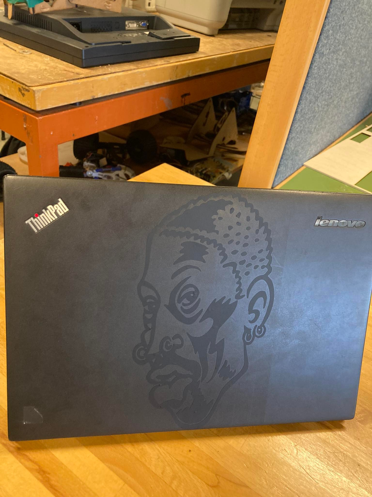Mig langaði til að skera út límmiða af Dennis Rodman til að setja á fartölvuna mína. Ferlið var tiltölulega einfalt og var ekki jafn krefjandi og seinni liður verkefisins. Svona var ferlið í grófum dráttum: Ég byrjaði á því að leita að flottum límmiða af Dennis Rodman á netinu sem myndi virka vel á vínylskerann, en helsta skorðan sem var til staðar var sú að línurnar þurftu að vera mjög skýrar og afmarkaðar, því vínylskerinn ræður illa við óljósar línur. Clip-art myndir eru oft með vel afmörkuðum línum þannig að ég fór á Google og sló inn „Dennis Rodman clip-art“ og fann þessa síðu og vistaði myndina af Rodman sem pdf: Rodman mynd
Svo fékk ég Hafliða, kennara áfangans, til að aðstoða mig við að breyta pdf myndinni yfir í „Vector file“ og hlaða inn í Inkscape þar sem viðeigandi stillingar voru valdar til þess að allt myndi ganga smurt fyrir sig í útskurðinum. Sjá mynd: Næsta skref var að skera út þá hluta af andlitinu sem áttu að vera hvítir eða auðir með dúkahníf, til þess að gera allar útlínur skýrar. Þegar ég var búinn að því náði ég málningarlímband, sem ég notaði svo til að líma límmiðann á fartölvuna mína (sjá fyrstu mynd fyrir afraksturinn). Hér má sjá hvernig ég notaði límbandið:
Þegar búið var að skera myndina út leit Rodman límmiðinn minn svona út:
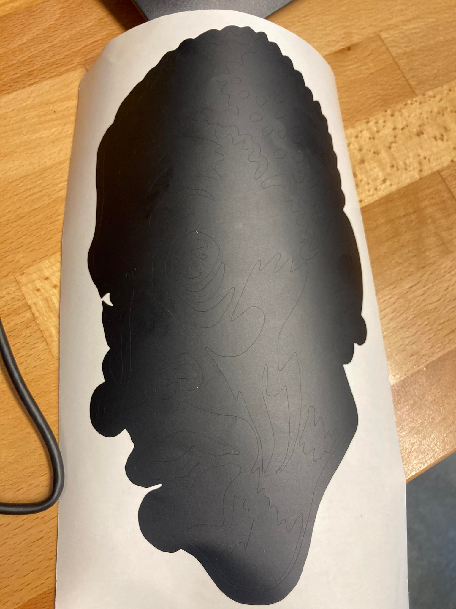Næsta skref var að skera út þá hluta af andlitinu sem áttu að vera hvítir eða auðir með dúkahníf, til þess að gera allar útlínur skýrar. Þegar ég var búinn að því náði ég málningarlímband, sem ég notaði svo til að líma límmiðann á fartölvuna mína (sjá fyrstu mynd fyrir afraksturinn). Hér má sjá hvernig ég notaði límbandið:
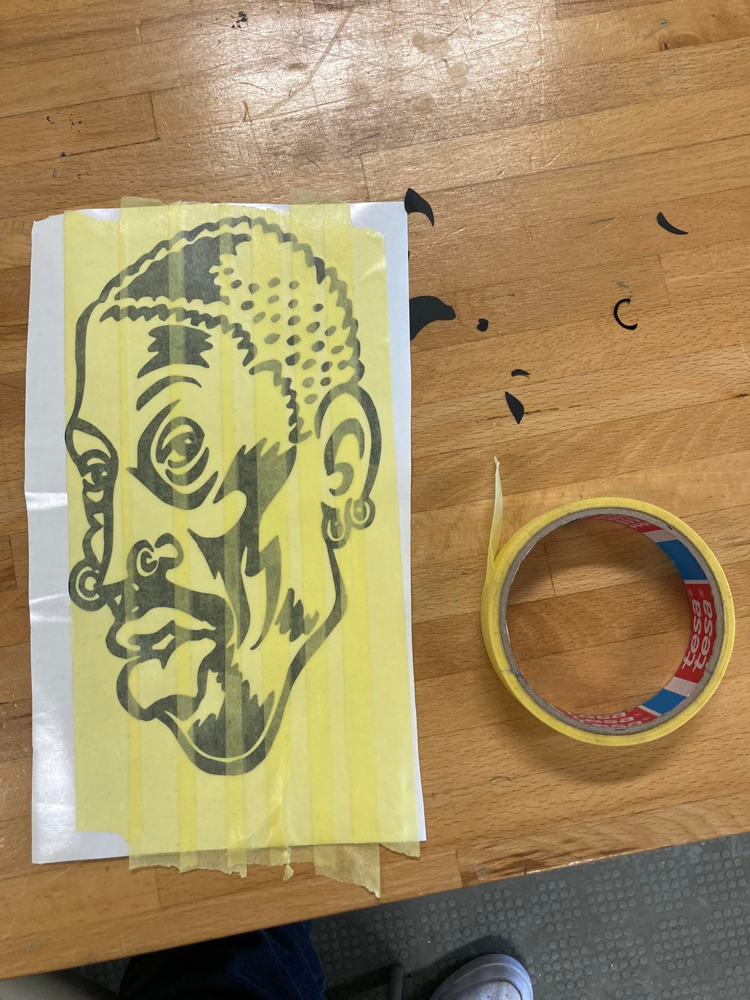Í heildina tók vínylskurðurinn 1,5 klst.
2. Press fit model úr birkikrossvið:
Mig langaði til að búa til einhvern sniðugan hlut fyrir alls konar smáhluti sem ég hafði ekki enn fundið stað fyrir í herberginu mínu, t.d. reglustiku, gamla tölvumús, lítinn hátalara, skæri, yddara og alls konar drasl sem hafði verið að þvælast fyrir mér. Ég fór á netið til þess að reyna að leita að lausn á þessu vandamáli og sækja mér innblástur fyrir hönnun. Eftir um hálftíma leit á netinu rakst ég á hlut sem virtist vera einföld og sniðug lausn á þessu. Hér er hluturinn: Vitra toolbox og hann lítur svona út:
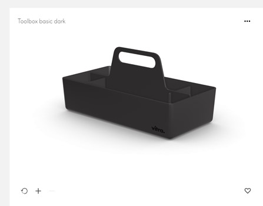Mér fannst þetta vera tilvalinn hlutur til þess að teikna í Fusion 360 þar sem flækjustigið er hæfilegt fyrir þetta verkefni ásamt því að þetta virtist vera góð lausn á þörf minni fyrir sambærilegan hlut í herbergið mitt. Ég ákvað samt að herma ekki alveg eftir þessari hönnun, heldur notaði ég hlutinn frá Vitra sem fyrirmynd og gerði nokkrar breytingar og einfaldanir á hönnuninni. Næsta skref var að byrja að skilgreina breytur og hefjast handa við að teikna hlutinn í Fusion 360. Þar sem krafa var gerð í verkefninu um samsetningu hlutar án líms eða festinga þá fór ég að fræða mig um „finger joints“ á YouTube og fann eftirfarandi myndband sem ég notaði til þess að búa til „fingur“ svo að hluturinn myndi smella vel saman án líms: Finger joint leiðbeiningar
Hér má sjá breyturnar sem ég skilgreindi til þess að búa til grunninn að verkærakassanum:
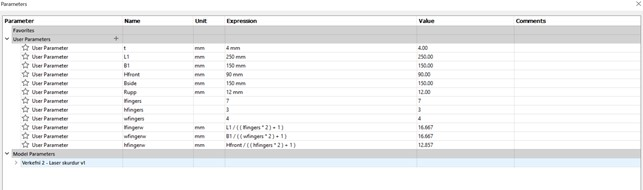Eftir fyrstu vinnulotu hjá mér (sem tók um 90min) leit grunnurinn að kassanum svona út:
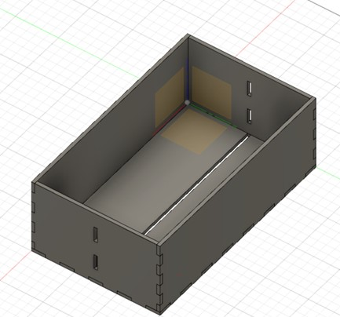Svo teiknaði ég handfangið sem festist bæði í raufinni í botni kassans og tvo fingur á hvorri hlið og þá var hönnunin tilbúin:
Ég lenti fyrst í smá vandræðum með að fá handfangið til þess að passa inn í samsetta hlutinn í Fusion vegna þess að ég teiknaði það upphaflega í öðru skjali og þar af leiðandi voru breytur handfangsins vistaðar á öðrum stað heldur en breytur hinna hlutanna. Ég gerði nefnilega ráð fyrir því að hægt væri að importa breyturnar úr hinu skjalinu yfir í samsetta hlutinn en eftir langa leit á netinu þá komst ég að þeirri niðurstöðu að það væri ekki hægt eða allavega frekar flókið. Það gæti vel verið að það sé hægt en ég nennti ekki að standa í því að leita lengur þannig að ég ákvað að teikna handfangið í samsetta skjalinu og fela bara hina hlutina á meðan svo þeir trufluðu mig ekki á meðan ég teiknaði handfangið. Í heildina tók ferlið að teikna handfangið, lenda í veseni, leysa það og setja svo hlutinn saman um 5 klst (alltof langur tími! Hefði auðveldlega getað tekið minni tíma með meiri þekkingu á Fusion). Hér má sjá lista yfir allar breytur sem ég skilgreindi í Fusion (mikilvægt að allar stærðir séu breytur en ekki fastar til þess að auðvelt sé að aðlaga hönnunina út frá óvæntum vandamálum í tengslum við skurðinn).
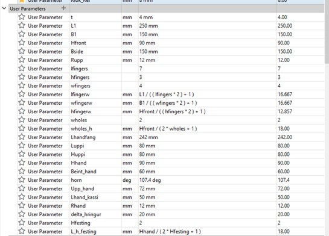Ég reyndi eftir bestu getu að velja stikana þannig að allir íhlutir samsetta hlutsins myndu passa inn á eina birkikrossviðs plötu (4mmx500mmx500mm) til þess að stuðla að góðri nýtingu efnisins. Á þessum tímapunkti var ég nokkuð viss um að ég myndi ekki lenda í neinum vandræðum með að fá hlutinn til að passa inn á myndina. Við höfðum val um tvö efni: 4mm þykkan birkikrossvið eða 3mm akríl. Ég ákvað að velja birkikrossvið þar sem ég gat ímyndað mér að hann væri þægilegri í meðhöndlun við samsetninguna.
Kerf prófun og CNC laser skurður
Nú var komið að því að fara að skera út hlutinn minn og setja hann saman. Fyrst þurfti ég að gera prófun á kerfinum (laserinn sem sker krossviðinn). Laserinn hefur ákveðið þvermál og sker því í burtu hluta efnisins. Til þess að taka mið af þessu, þá þarf að prófa kerfinn til þess að ákvarða hversu mikið efni verður fjarlægt við skurðinn. Á næstu mynd má sjá prófunina:
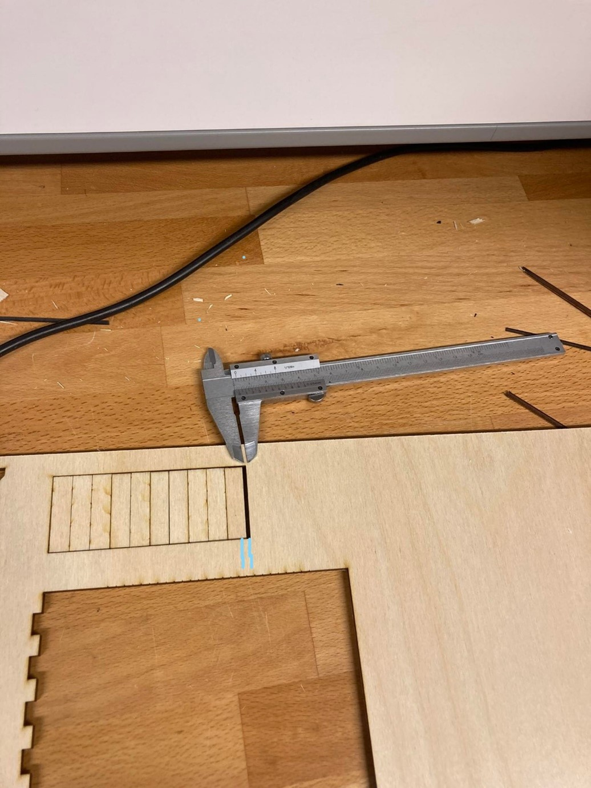Eins og sjá má á myndinni var ferhyrningur með 10 línum skorinn út. Munurinn (e. offset) á línunni lengst til hægri og næstu línu við hliðina á (bláu línurnar á myndinni), er heildar frávikið sem myndast vegna lasersins. Munurinn var mældur og reyndist vera 2mm, en þar sem línurnar eru 10, þá er þvermál kerfsins 2mm/10 = 0,2mm. Nauðsynlegt er að velja réttar stillingar í Fusion 360 til þess að Epilog Laser Cutter viti hvar á að skera. Á næstu mynd má sjá þessar stillingar. Farið er í Manufacture -> Fabrication -> Cutting -> 2D profile og svo er kerf width sett sem 0,2mm og Nozzle Clearance Diameter = 4mm.
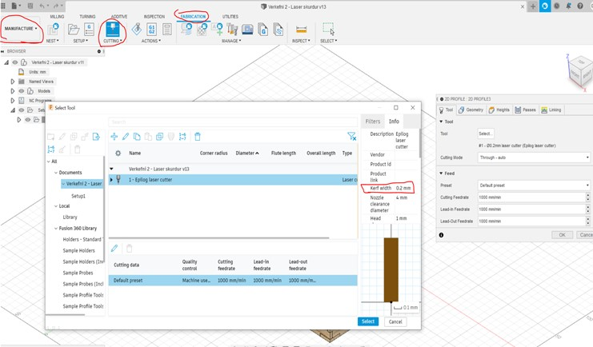Þegar þetta er komið er hægt að exporta skjalinu sem DXF skjali og opna það svo í forritinu Inkspace. Svo notaði ég USB kubb til þess að flytja skrána þangað og þegar ég setti svo USB lykilinn inn í tölvuna sem tengist Epilog Laser Cutter, þá var allt klárt til þess að skera hlutinn minn út. Ég notaði eftirfarandi stillingar á kerfinum skv. fyrirmælum Hafliða:
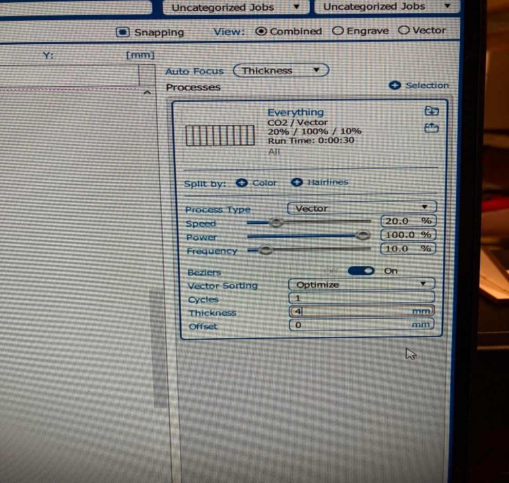Ég lenti ekki í neinum teljandi vandræðum með að setja hlutinn saman og ekkert lím þurfti til þess að halda honum saman.
Hér má sjá útkomuna:
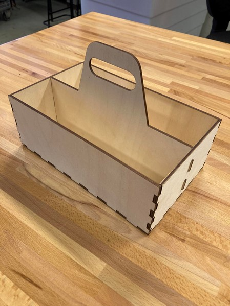Tíminn sem fór í vinnslu verkefnis 2
Ég hélt gróflega utan um tímann sem hver verkþáttur í verkefninu tók og hér má sjá töflu þar sem þetta er tekið saman:
Vínylskurður
| Velja mynd | 0,5 |
| Stillingar í PDF-skjali og Inkscape | 0,5 |
| Skera út og líma á tölvu | 0,5 |
| Skrifa vinnudagbók | 0,5 |
| Tími samtals | 2,0 |
Press fit model úr birkikrossvið
| Velja hlut | 0,5 |
| Teikna í Fusion 360 | 6,5 |
| Kerf prófun | 1 |
| Stillingar í Epilog Cutter og Inkscape | 1,5 |
| Samsetning hlutar | 0,5 |
| Skrifa vinnudagbók | 2.0 |
| Tími samtals | 12 |
- © Untitled
- Design: HTML5 UP